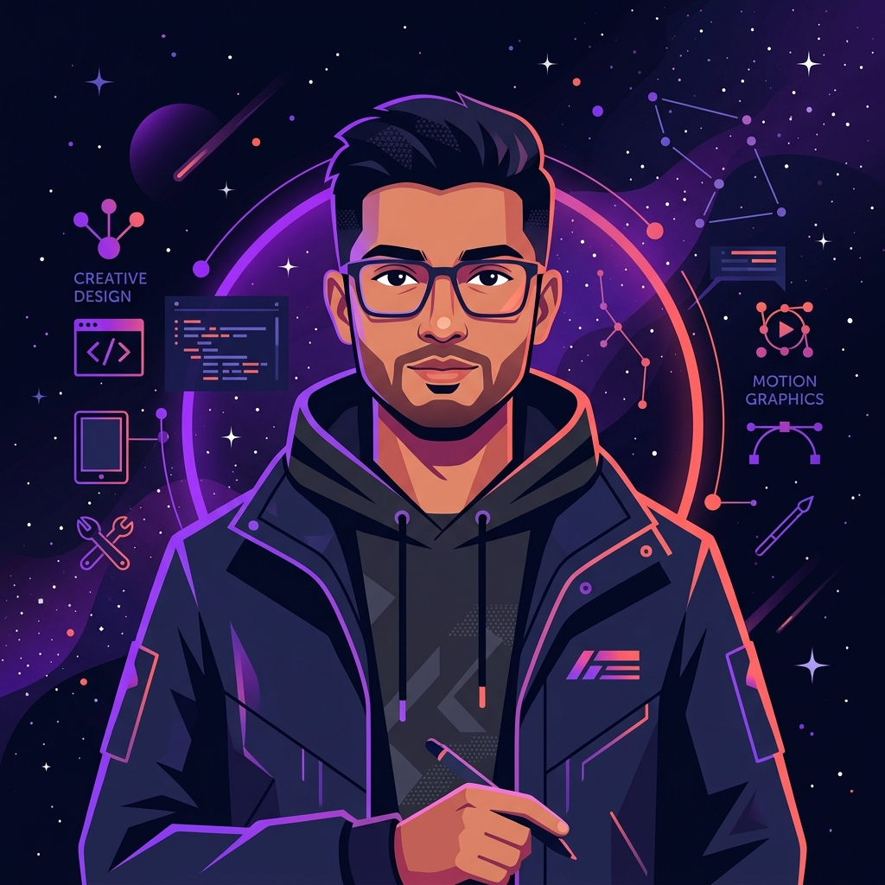

I blend visual design with motion to create experiences that don't just look good — they feel alive.

Hey — I'm Abhisek, a creative designer and motion artist based in India. My journey started with a fascination for how visuals communicate without words — how a single frame can stop someone mid-scroll.
Over two years I've collaborated with startups, agencies, and brands to craft digital experiences that convert and captivate. I work at the intersection of UI/UX design and motion graphics.
When I'm not pushing pixels or animating keyframes, you'll find me exploring cinematography, studying color science, or obsessing over micro-interactions.
Every element earns its place. Design should solve problems first, then be beautiful. I don't add noise — I craft signal.
Animation isn't decoration — it's communication. The right motion conveys hierarchy, guides attention, and tells a story in milliseconds.
I stay obsessively curious. I'm always experimenting with emerging tools and techniques — three steps ahead of the trend.
Started freelancing — logo design and social media graphics. Built from zero, landing my first paid client in week two.
Discovered After Effects late at night — stayed up for 3 days straight. Fell headfirst into motion graphics, never looked back.
Added UI/UX to my toolkit. Figured out Figma, Webflow, and CSS animation — bridging the gap between static design and living code.
Worked with 15+ brands across India, UAE, and the US — producing brand identities, explainer videos, and full website builds.
Launched my personal studio — combining everything I know into a full-service creative powerhouse for ambitious brands.
Open to freelance projects, collaborations, and full-time opportunities.